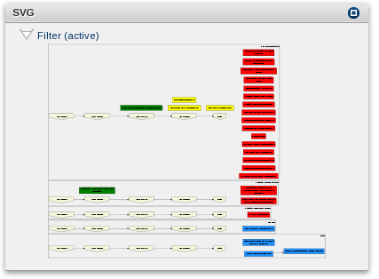

View dependency of tasks and interactions between artifacts
|  This graph will show you, what tasks are dependent on each other. After maximizing the portlet, two tasks can be selected and will be made dependent on each other. Dependencies can be deleted, by clicking on the arrow that connect to tasks. |